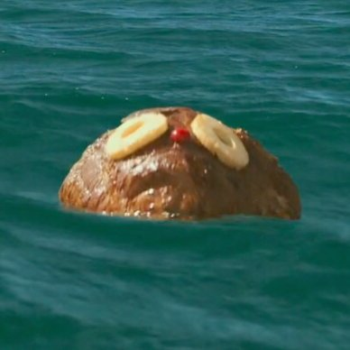

Rum Ham

An vital food source if you're stranded at sea, also doubles as a good companion to keep you sane!
Rum ham is one of our more traditional recipes perfected by Chief Frank. The following is an excerpt from the book, "The 7 Secrets of Awakening the Highly Effective Four-Hour Giant".
Ingredients:
- 1 10-pound canned ham
- 1 hunting knife
- 3 1-liter bottles of rum
- 1 handgun
- 1 box handgun ammo
- 1 bunch of Italian parsley
Steps:
- De-can ham (for instructions, see back of can).
- Using the hunting knife, carve a hole in the top of the ham wide enough to hold the mouth of a rum bottle.
- Open first rum bottle and upend it into your ham hole. If you made your hole deep enough, it should stand up there on it's own.
- Load gun.
- Open second rum bottle and upend it into your ham hole (the one in your face this time). As the liquid flows into your mouth, swallow at regular intervals.
- Repeat step five until bottle is empty.
- Open third bottle of rum and repeat step six.
Remove safety from handgun.
- Wait for ham pirates.
- Shoot ham pirates.
- Reload gun.
- Repeat steps eight through eleven until rum has been fully absorbed into ham, usually about twelve hours.
- Garnish with parsley and serve.